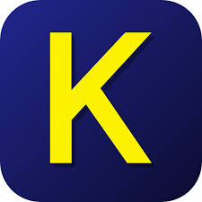
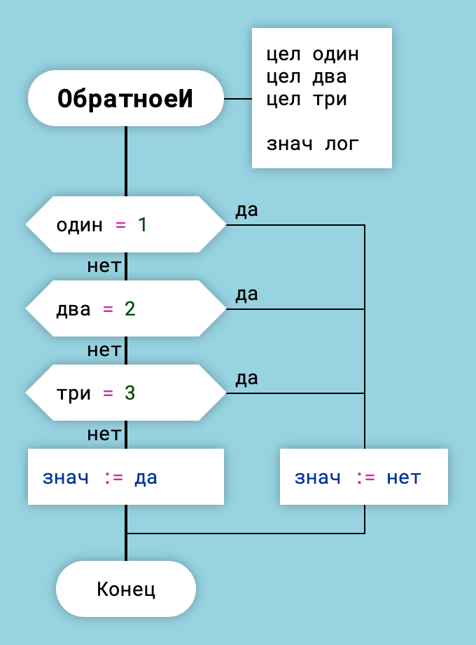
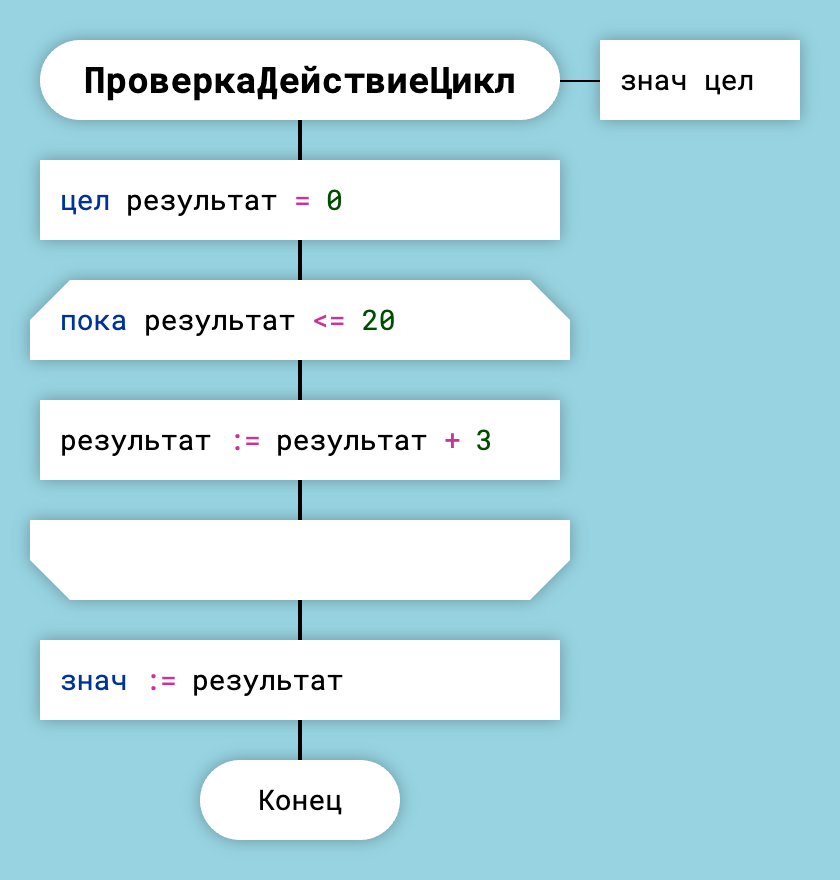
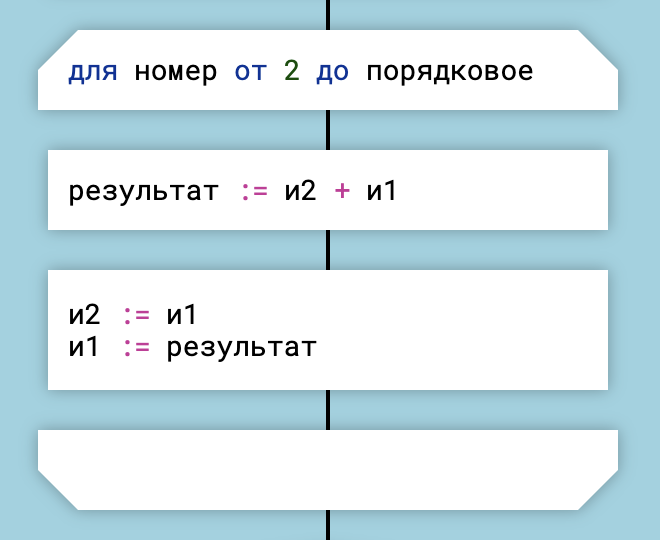

Генерация кода на языке КуМир

ДраконТех генерирует код, который работает как в классической среде КуМир от НИИСИ РАН, так и в qumir.dev.
Точка входа
Точка входа в модуле на языке КуМир — это первый алгоритм в файле, но в ДраконТех нельзя задать последовательность обычных функций в выходном файле.
Чтобы задать точку входа, нужно создать функцию со специальным именем старт. ДраконТех поместит функцию старт перед остальными функциями.
Функция старт — это и есть точка входа.
Как задать заголовок файла
Чтобы поместить нужный код в начало файла, нужно в корневой папке проекта создать функцию со специальным названием заголовок. ДраконТех запишет содержимое этой функции в начало файла.
Пример кода, который можно поместить в заголовок:
использовать Чертежник цел удачных = 0 цел неудачных = 0
Тип возвращаемого значения функции
Чтобы задать тип значения, которое возвращает функция, нужно поместить в свойствах диаграммы в поле "Аргументы" описание типа следующего вида: знач <тип>. Например: знач лог, знач цел, знач лит.
Данная функция возвращает логический тип:

Аргументы функции и возвращаемое значение
Цикл Для
Икона "Цикл Для" является аналогом операторов цикла for и foreach.
ДраконТех копирует текст иконы "Цикл Для" в сгенерированный код и автоматически добавляет ключевое слово нц. Вручную ключевое слово нц писать не надо.
Например:

Цикл Для — пока
или

Цикл Для — от-до